GeorgianArtist.com
An online gallery of my original Canadian landscape paintings and photographs of Georgian Bay and the surrounding Ontario region — Beaver River, Blue Mountain, Manitoulin, Owen Sound — sold as originals and gallery-wrapped, ready-to-hang prints. I rebuilt the storefront from Squarespace to a custom Next.js stack, taking hosting from $45/mo to $0.
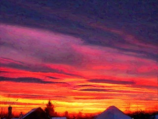
Blue Mountain Sunrisepainting Alpine Ski: Fallpainting
Alpine Ski: Fallpainting
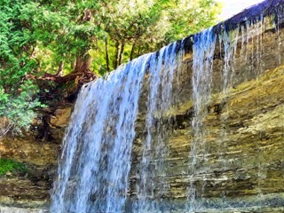
Bridal Veil Fallspainting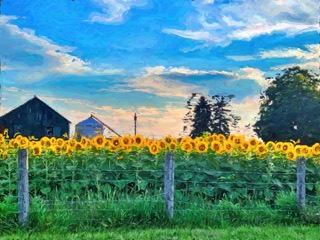
Local Farmpainting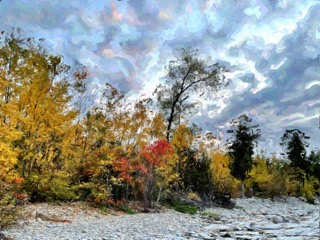
Peasemarshpainting Northwinds Beachpainting
Northwinds Beachpainting
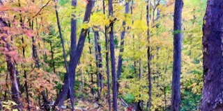
Blue Mountain Trailpainting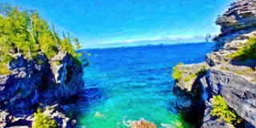
The Grottopainting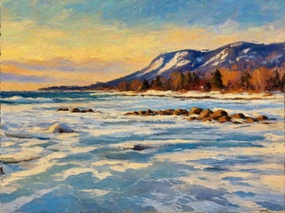
Council Beachpainting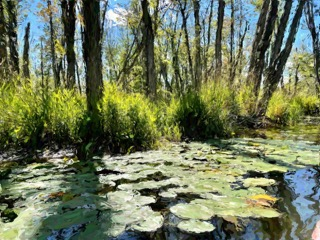
Beaver River Accesspainting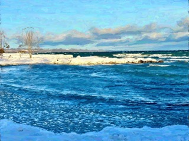
Lora Baypainting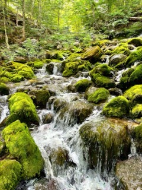
Bruce Trail in the Grey Highlandspainting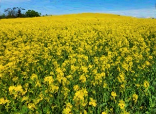
Ravenna Canolapainting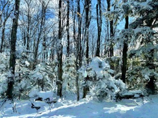
Bruce Trail at Eppingpainting Near Killarneypainting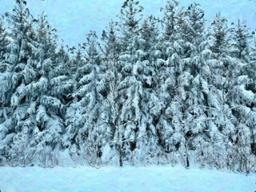
Singhamptonpainting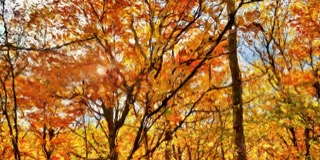
Top of Blue Mountainpainting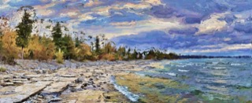
Delphi Pointpainting Scenic Cavespainting
Scenic Cavespainting
 Inglis Falls, Owen Soundpainting
Inglis Falls, Owen Soundpainting
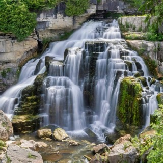
Inglis Falls, Owen Soundphotograph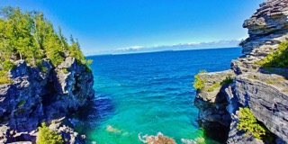
The Grottophotograph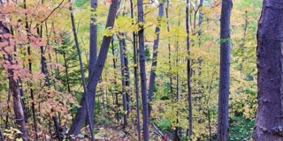
Blue Mountain Trailphotograph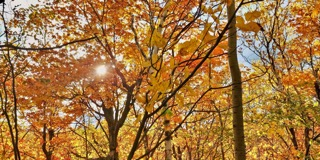
Autumn Canopyphotograph Top of Blue Mountainphotograph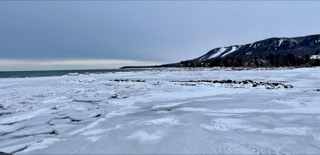
Council Beachphotograph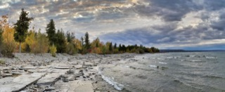
Delphi Pointphotograph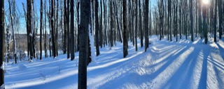
Scenic Cavesphotograph Ravenna Canolaphotograph
Ravenna Canolaphotograph
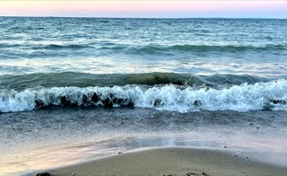
Northwinds Beach Twilightphotograph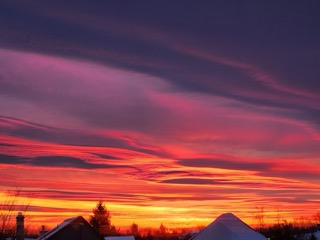
Blue Mountain Sunrisephotograph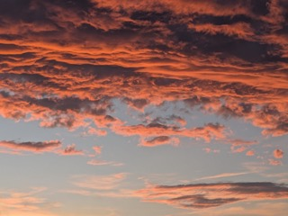
Blue Mountain Sunsetphotograph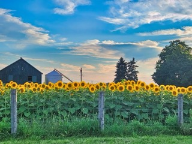
Local Farmphotograph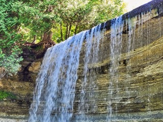
Bridal Veil Fallsphotograph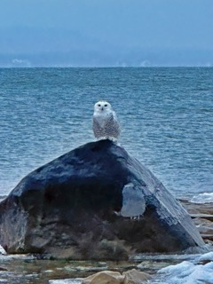
Snowy Owl in Craigleithphotograph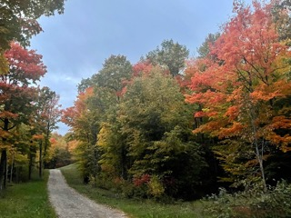
Alpine Ski Club: Fallphotograph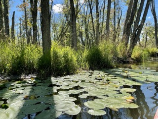
Beaver River: Access Point 2photograph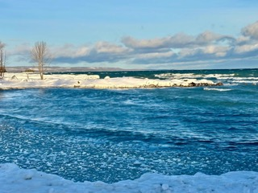
Lora Bayphotograph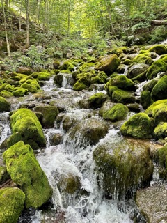
Bruce Trail in the Grey Highlandsphotograph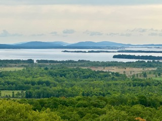
Manitoulin Islandphotograph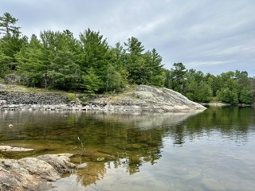
Near Killarneyphotograph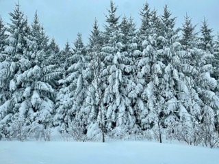
Singhamptonphotograph

{kind=link}
{kind=link}
{kind=link}
{kind=link}
{kind=link}